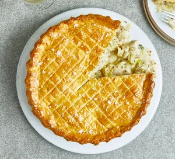

Chicken Pie

Ingredients
- 50g butter
- 1 leek, finely sliced
- 8 skinless, boneless chicken thighs, cut into chunks
- 1 thyme sprig, leaves picked
- 2 bay leaves
- 2 tbsp plain flour
- 100ml white wine or dry sherry
- 300ml chicken stock
- 100ml crème fraîche or double cream
- 1 tbsp mustard (we used wholegrain, but use whatever variety you have)
- 150g cold butter, cut into cubes, plus extra for the dish
- 400g self-raising flour, plus extra for dusting
- 1 egg, beaten
Steps
- Melt the butter in a casserole dish over a low heat. Add the leek, chicken, herbs and seasoning, and cook for 10-12 mins until the chicken is cooked, the leeks have softened, and the mixture is simmering. Stir in the flour and cook for 3 mins until the mix resembles a sandy paste. Pour in the wine or sherry, and bubble for 1 min, then stir in the stock, crème fraîche or cream and the mustard. Bring to a simmer. Cook for 10 mins until the chicken is cooked through. Season to taste, remove from the heat and leave to cool completely. Tip into a container and chill for 2 hrs, or overnight. Will keep chilled for up to two days.
- To make the pastry, rub the butter into the flour with a large pinch of salt until completely combined. Add half the beaten egg and 4 tbsp ice-cold water, and bring together into a dough using your hands, adding a little more water if needed. Knead for a minute so it completely comes together, then chill for 1 hr.
- Butter a 20cm loose-bottomed cake tin. Roll two-thirds of the pastry out until large enough to line the tin with some overhanging. Use it to line the tin, then spoon in the filling. Roll out the remaining pastry until large enough to cover the pie. Brush the edge of the pastry with a little of the remaining beaten egg, then drape over the pie to close it. Trim the edge, then press with a fork to seal. Chill until you’re ready to cook. Will keep chilled for up to 24 hrs.
- Heat the oven to 220C/200C fan/gas 7 with a baking sheet inside. Brush the pie with some of the remaining beaten egg, then lightly score a criss-cross pattern on top using a sharp knife. Bake on the hot sheet for 20 mins, then brush with the rest of the egg, season with sea salt flakes and bake for 15-20 mins more until deep golden. Remove from the oven and rest for 10 mins, then carefully remove from the tin, put on a board and cut into wedges to serve.